The group aesthetic is by default set to the interaction of all discrete variables
in the plot. This choice often partitions the data correctly, but when it does not,
or when no discrete variable is used in the plot, you will need to explicitly define the
grouping structure by mapping group to a variable that has a different value
for each group.
Details
For most applications the grouping is set implicitly by mapping one or more
discrete variables to x, y, colour, fill, alpha, shape, size,
and/or linetype. This is demonstrated in the examples below.
There are three common cases where the default does not display the data correctly.
geom_line()where there are multiple individuals and the plot tries to connect every observation, even across individuals, with a line.geom_line()where a discrete x-position implies groups, whereas observations span the discrete x-positions.When the grouping needs to be different over different layers, for example when computing a statistic on all observations when another layer shows individuals.
The examples below use a longitudinal dataset, Oxboys, from the nlme package to demonstrate
these cases. Oxboys records the heights (height) and centered ages (age) of 26 boys (Subject),
measured on nine occasions (Occasion).
See also
Geoms commonly used with groups:
geom_bar(),geom_histogram(),geom_line()Run
vignette("ggplot2-specs")to see an overview of other aesthetics that can be modified.
Other aesthetics documentation:
aes(),
aes_colour_fill_alpha,
aes_linetype_size_shape,
aes_position
Examples
# \donttest{
p <- ggplot(mtcars, aes(wt, mpg))
# A basic scatter plot
p + geom_point(size = 4)
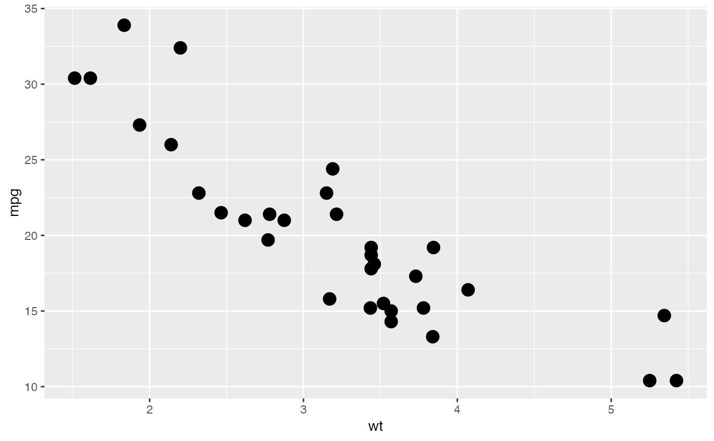
# Using the colour aesthetic
p + geom_point(aes(colour = factor(cyl)), size = 4)
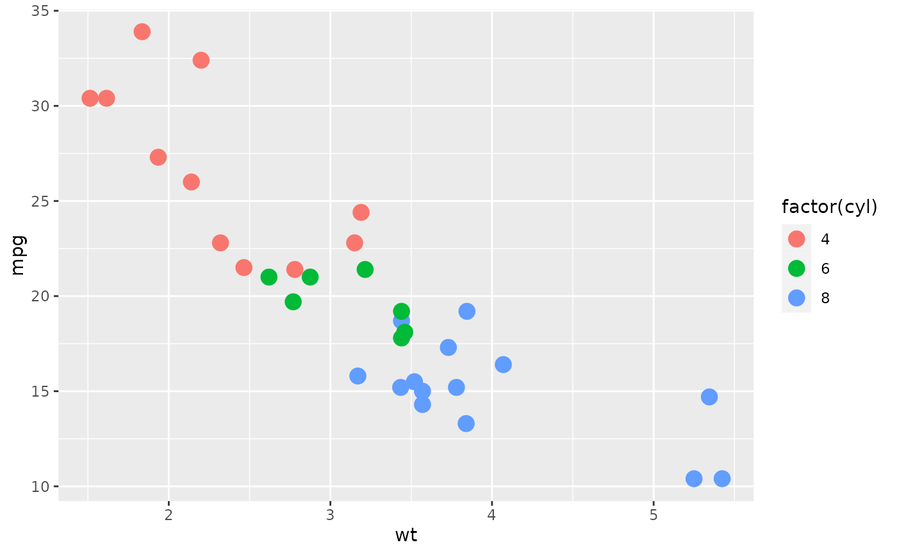
# Using the shape aesthetic
p + geom_point(aes(shape = factor(cyl)), size = 4)
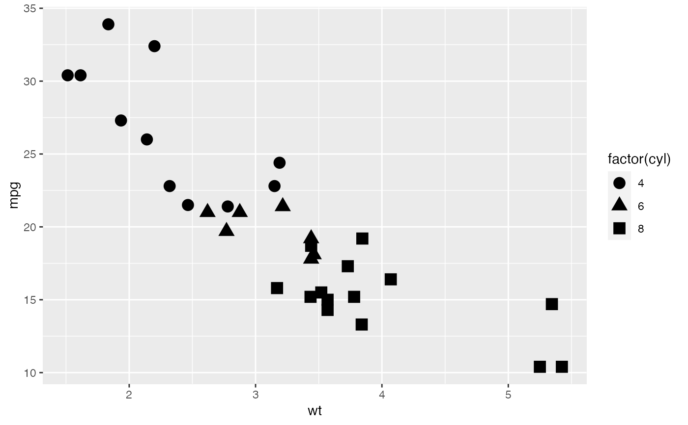
# Using fill
p <- ggplot(mtcars, aes(factor(cyl)))
p + geom_bar()
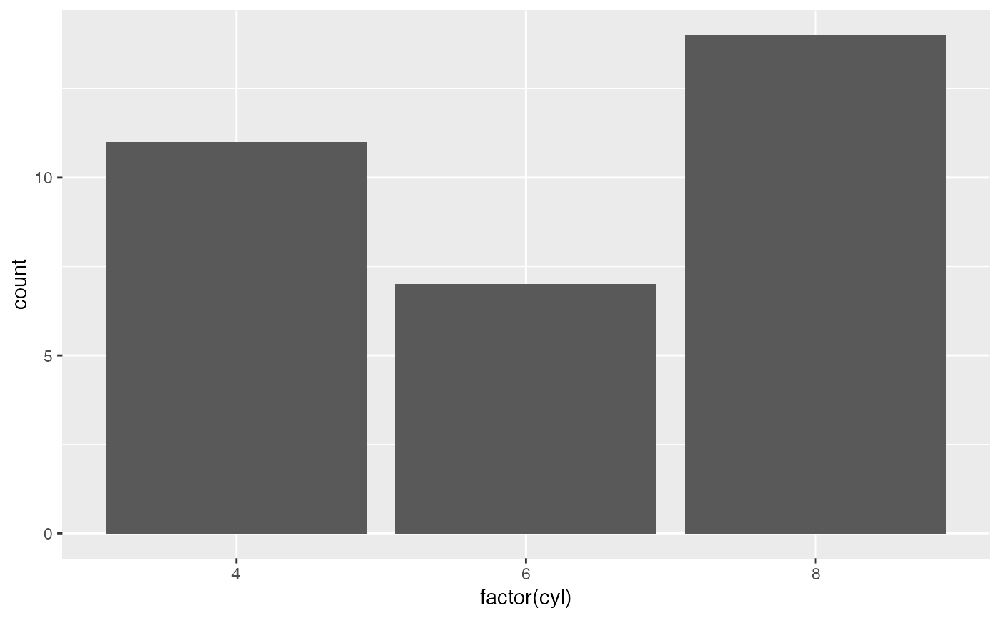
p + geom_bar(aes(fill = factor(cyl)))
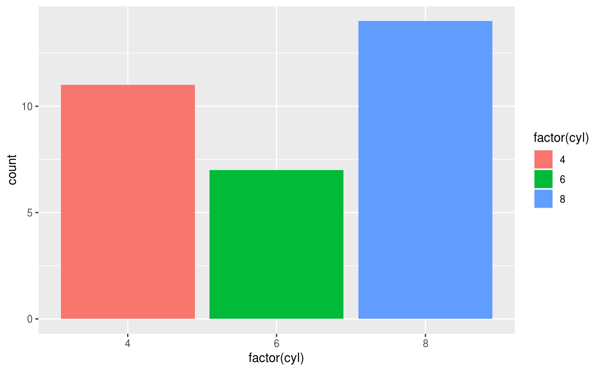
p + geom_bar(aes(fill = factor(vs)))
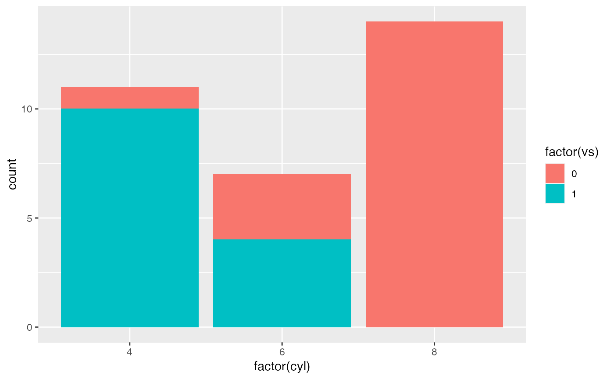
# Using linetypes
ggplot(economics_long, aes(date, value01)) +
geom_line(aes(linetype = variable))
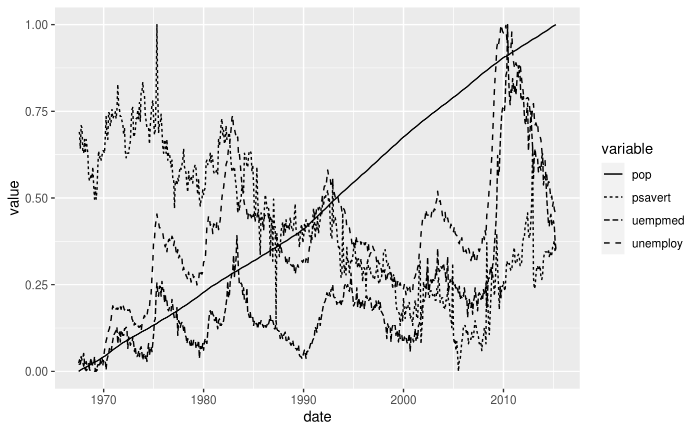
# Multiple groups with one aesthetic
p <- ggplot(nlme::Oxboys, aes(age, height))
# The default is not sufficient here. A single line tries to connect all
# the observations.
p + geom_line()
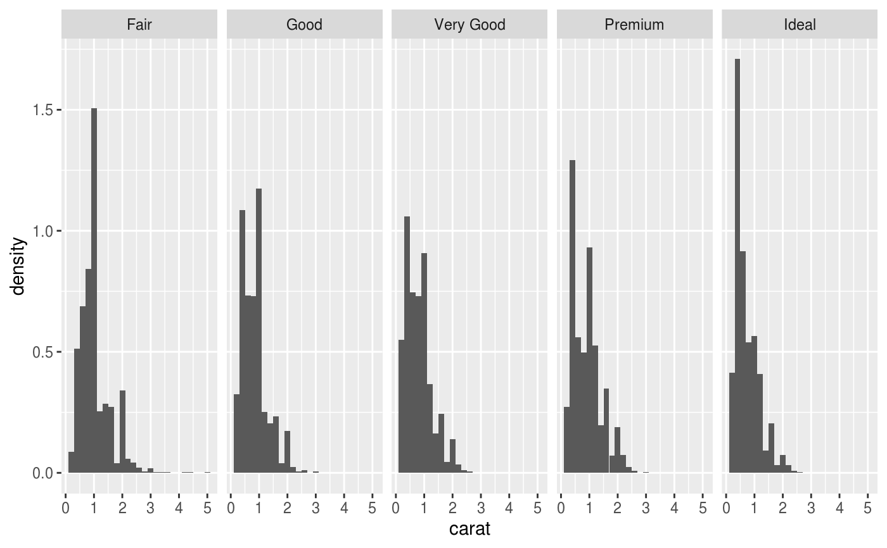
# To fix this, use the group aesthetic to map a different line for each
# subject.
p + geom_line(aes(group = Subject))
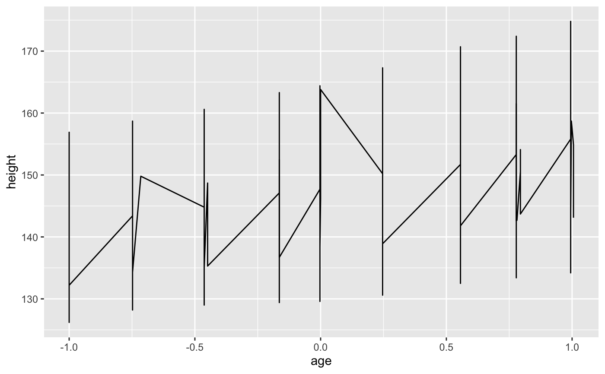
# Different groups on different layers
p <- p + geom_line(aes(group = Subject))
# Using the group aesthetic with both geom_line() and geom_smooth()
# groups the data the same way for both layers
p + geom_smooth(aes(group = Subject), method = "lm", se = FALSE)
#> `geom_smooth()` using formula = 'y ~ x'
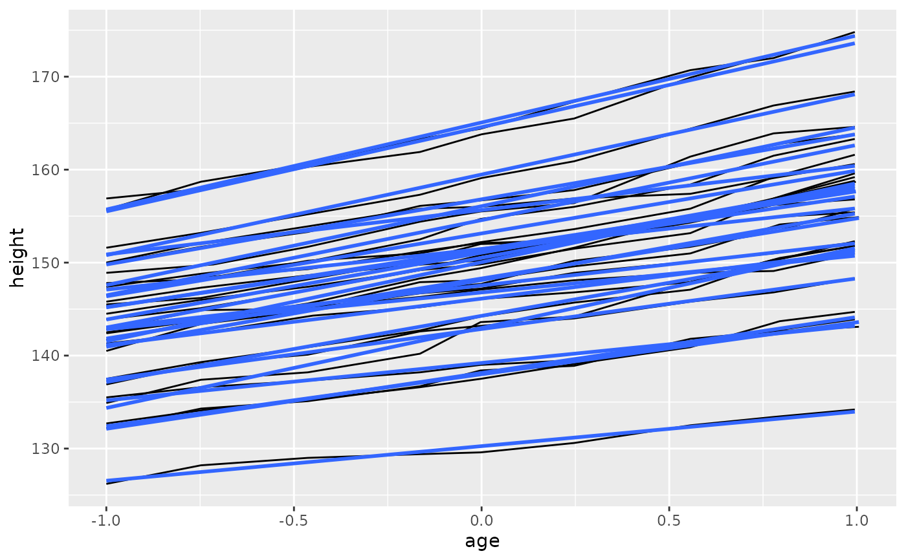
# Changing the group aesthetic for the smoother layer
# fits a single line of best fit across all boys
p + geom_smooth(aes(group = 1), size = 2, method = "lm", se = FALSE)
#> Warning: Using `size` aesthetic for lines was deprecated in ggplot2 3.4.0.
#> ℹ Please use `linewidth` instead.
#> `geom_smooth()` using formula = 'y ~ x'
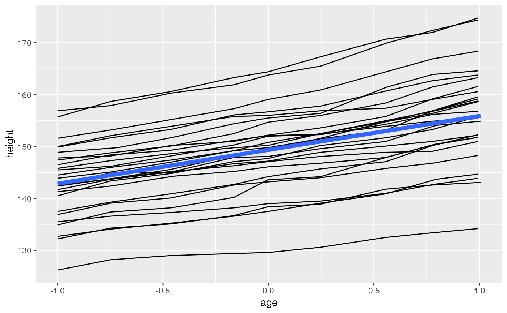
# Overriding the default grouping
# Sometimes the plot has a discrete scale but you want to draw lines
# that connect across groups. This is the strategy used in interaction
# plots, profile plots, and parallel coordinate plots, among others.
# For example, we draw boxplots of height at each measurement occasion.
p <- ggplot(nlme::Oxboys, aes(Occasion, height)) + geom_boxplot()
p
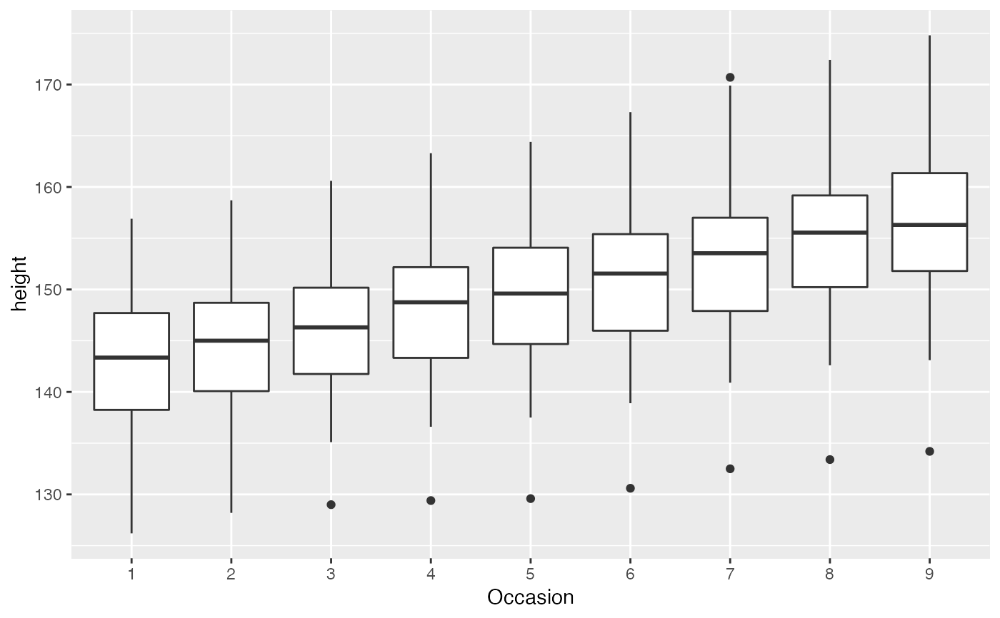
# There is no need to specify the group aesthetic here; the default grouping
# works because occasion is a discrete variable. To overlay individual
# trajectories, we again need to override the default grouping for that layer
# with aes(group = Subject)
p + geom_line(aes(group = Subject), colour = "blue")
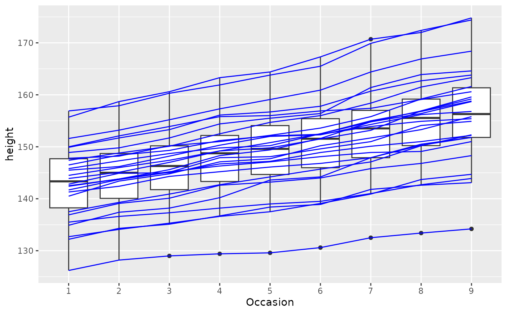
# }